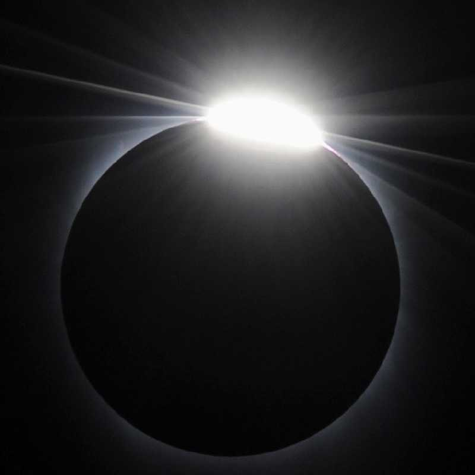
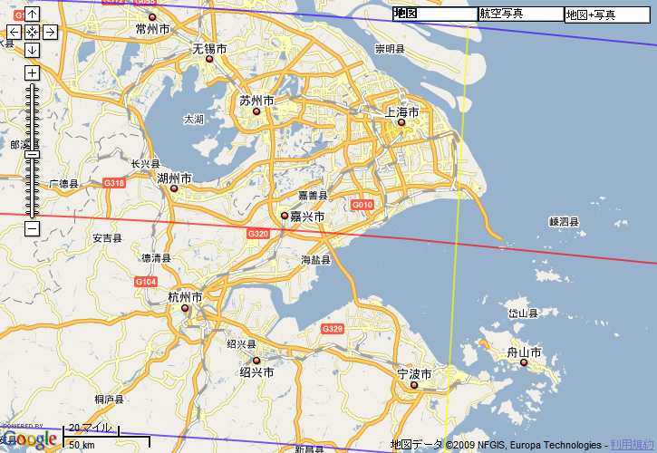
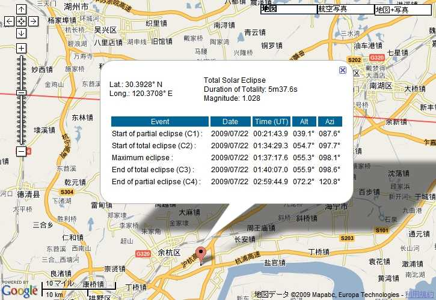

Total Solar Eclipse China 皆既日食
２００９年７月２２日上海近郊嘉興市郊外で２１世紀最大の皆既日食を観測していたが曇時々雨で諦めていたところ第三接食時に雲の切れ目から突然ダイヤモンドリングが現れ大歓声が起こった 第三接食から７５％食まで雲の切れ目からちらちら観測出来たがその後厚い雲に覆われてしまった


残念ながら雲に覆われていたためコロナは観測出来ず３６０度夕焼けの状態も観測出来なかったが第二接食直前から急に暗闇になり５分半の皆既日食中は夜状態となる体験をした